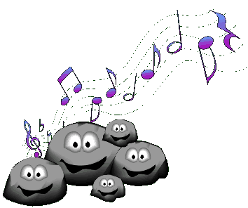

Music has always been an important part of Indian life.The range of musical phenomenon in India extends from simple melodies to what is one of the most well- developed systems of classical music in the world
. There are references to various string and wind instruments, as well as several kinds of drums and cymbals, in the Vedas. Some date the advent of the system of classical Indian music to Amir Khusro. Muslim rulers and noblemen freely extended their patronage to music. In the courts of the Mughal emperors, music is said to have flourished, and the Tansen was one of the jewels of Akbar's court.
The great poet-saints who chose to communicate in the vernacular tongues brought forth a great upheaval in north India and the Bhakti or devotional movements they led gained many adherents. The lyrics of Surdas, Tulsidas, and most particularly Kabir and Mirabai continue to be immensely popular. By the sixteenth century, the division between North Indian (Hindustani) and South Indian (Carnatic) music was also being more sharply delineated. Classical music, both Hindustani and Carnatic, may be either instrumental or vocal.
The great poet-saints who chose to communicate in the vernacular tongues brought forth a great upheaval in north India and the Bhakti or devotional movements they led gained many adherents. The lyrics of Surdas, Tulsidas, and most particularly Kabir and Mirabai continue to be immensely popular. By the sixteenth century, the division between NI (Hindustani) and South Indian (Carnatic) music was also being more sharply delineated. Classical music, both Hindustani and Carnatic, may be either instrumental or vocal.The great poet-saints who chose to communicate in the vernaculartongues brought forth a great upheaval in north India and the Bhakti or devotional movements they led gained many adherents. The lyrics of Surdas, Tulsidas, and most particularly Kabir and Mirabai continue to be immensely popular. By the sixteenth century, the division between North Indian(Hindustani) and South Indian (Carnatic) music was also being more sharply delineated. Classical music, both Hindustani and Carnatic, may be either instrumental or vocal.